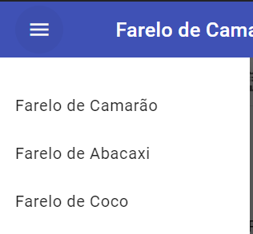
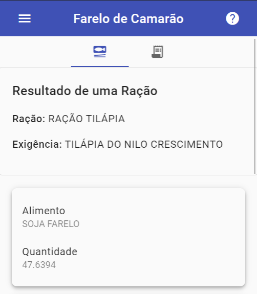

1. Ao clicar neste botão menu deve ser mostrado o menu
do aplicativo onde estão listados todas as rações disponíveis:

2. Selecionando um dos itens acima, o botão
set_meal exibe uma tabela com as informações dos
nutrientes que compõem cada ração.

3. Por fim, o botão receipt_long mostra uma descrição
completa da ração.